اليوم
— جارٍ التحميل — هـ.
—

—
اختر المدينة أو موقعك لعرض المواقيت.
حساب محلي بمكتبة Adhan. يعمل دون إنترنت بعد حفظ الموقع. راجع طريقة الحساب والتوقيت المحلي المعتمد.
البحث يرسل اسم المدينة إلى Open-Meteo، والطقس يرسل إحداثياتها إلى الخدمة نفسها. الصلاة والتاريخ يُحسبان محليًا. إذن GPS اختياري، والمنطقة الزمنية قابلة للتعديل.